All misunderstandings stem from interpreting others’ actions through our own mindset.
Each person is an independent individual, kind, free, and happy.
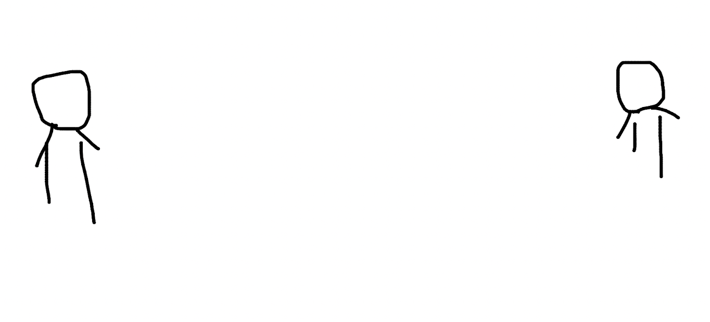Everyone has their own worldview, which has settled after experiencing a turbulent life, serving as a weapon to face a cruel world and complex human nature, perhaps like a magic mirror, rich and magical.
A worldview gives each person different levels of understanding, translating others’ words into meanings they can comprehend within their minds.
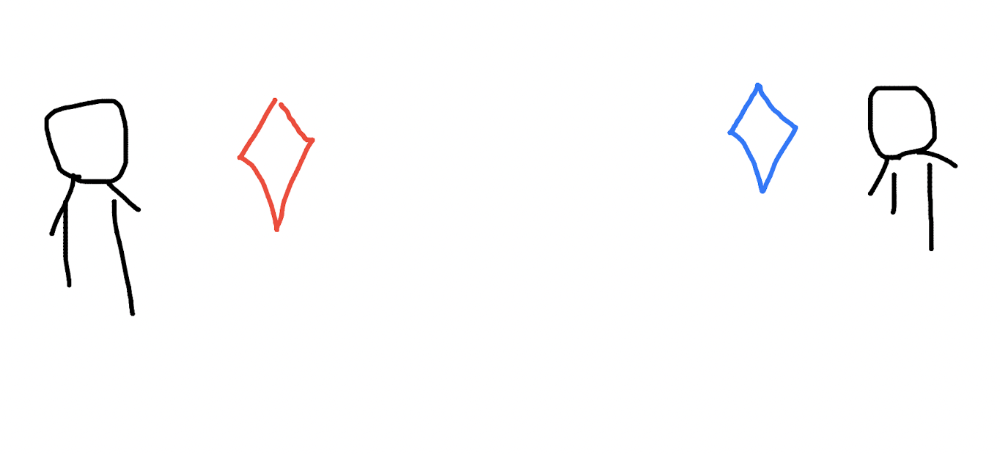When you want to express an idea, you convert the idea into words, a process governed by your ability to express. Your magic mirror is red, so the words you say are also red, and these red words are kind.
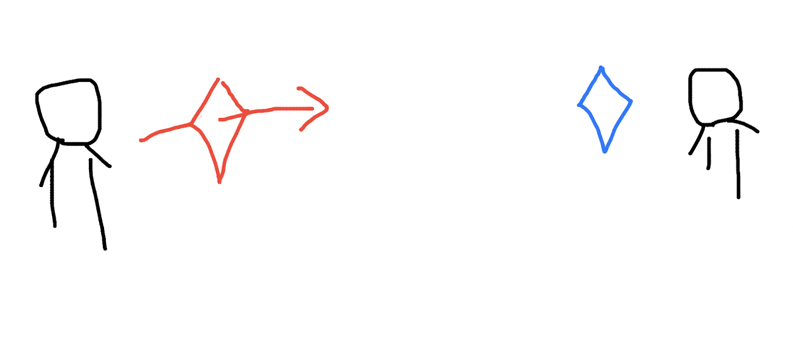Through some medium, your words reach the other party.
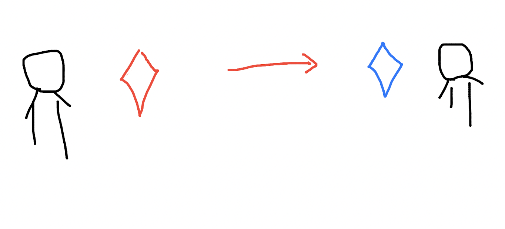Unfortunately, the other party’s magic mirror is blue. You understand this situation, as it is hard to expect everyone to have the same level of understanding and the same color magic mirror as you. This world is inherently diverse and colorful.
So, unfortunately, your red words, interpreted by a blue magic mirror, are understood as pink. Red is without malice, but pink carries some other connotations, deviating from your original intent.
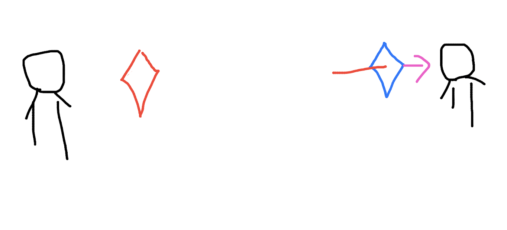The other party responds to you based on the pink meaning with blue words. The response is already biased because the other party misunderstood your meaning.
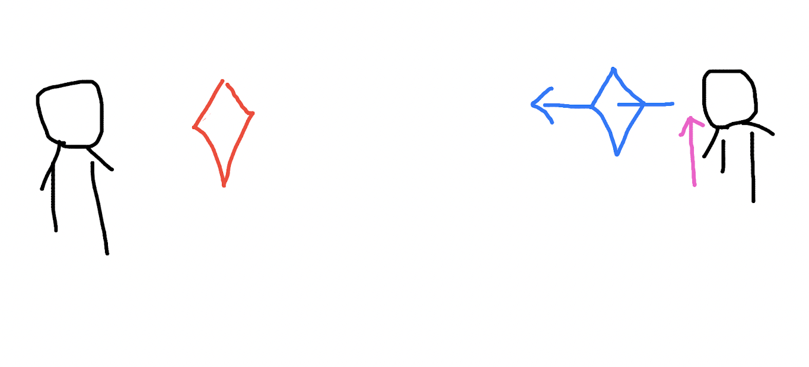The blue content may be without malice or may carry a bit of malice, but it flies towards you.
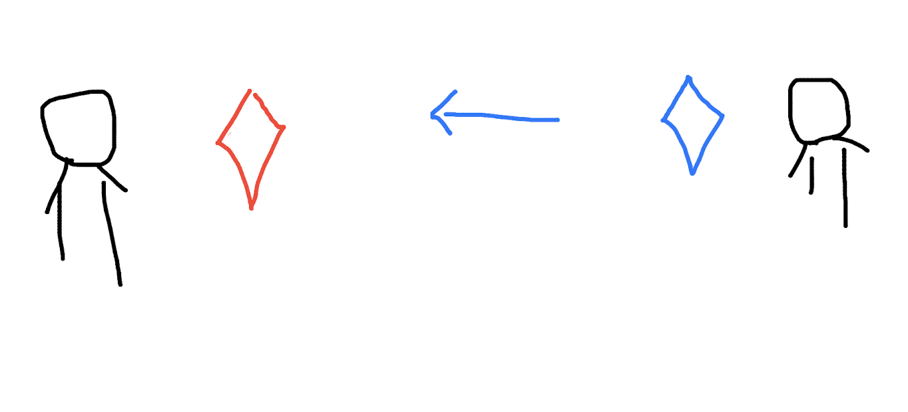Again, unfortunately, your magic mirror is red. For the blue content from the other party, your magic mirror interprets it as yellow.
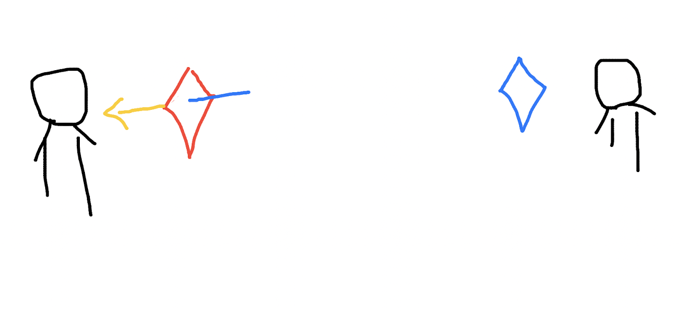This deepens the misunderstanding. Originally pure red and blue hearts both feel unforgivably hurt. How could the other party do this!
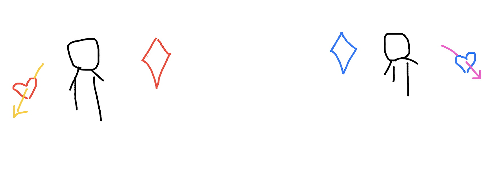Over time, the gap between the two people grows larger.
As a clever magician, you strive to change this situation. Through your diligent practice, you find a way to acquire a blue magic mirror.
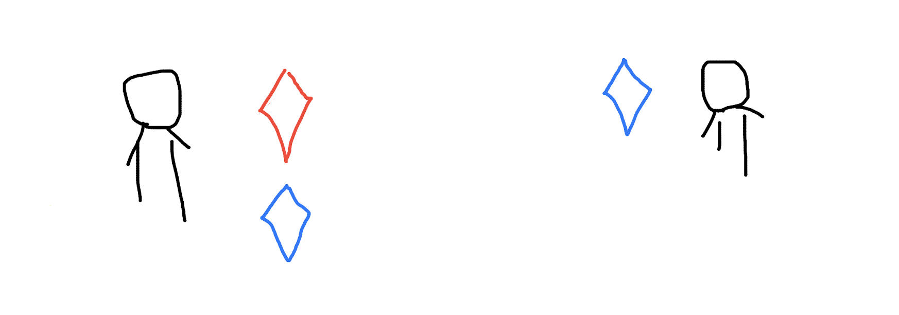In the future, when the other party communicates with you using a blue magic mirror,
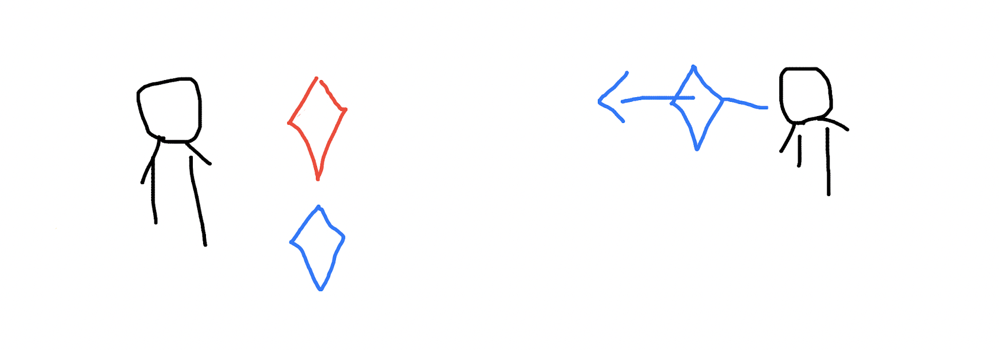you can take out your blue magic mirror to interpret the other’s content.
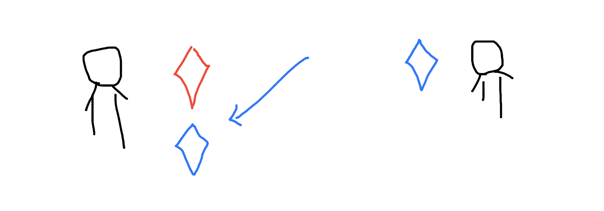Through the interpretation of the blue magic mirror, the other party’s kind content can reach your mind unchanged.
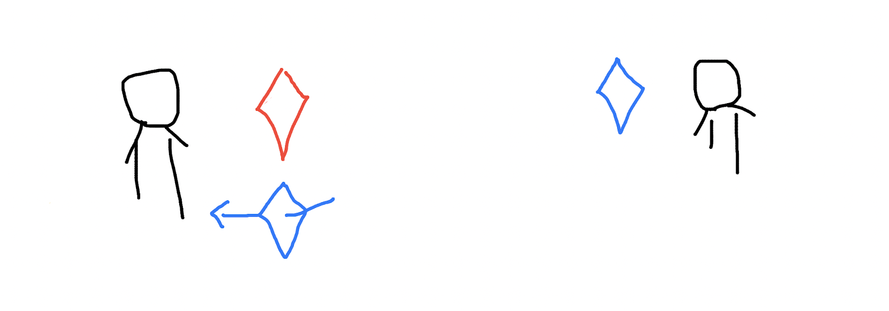You will not be hurt by this.
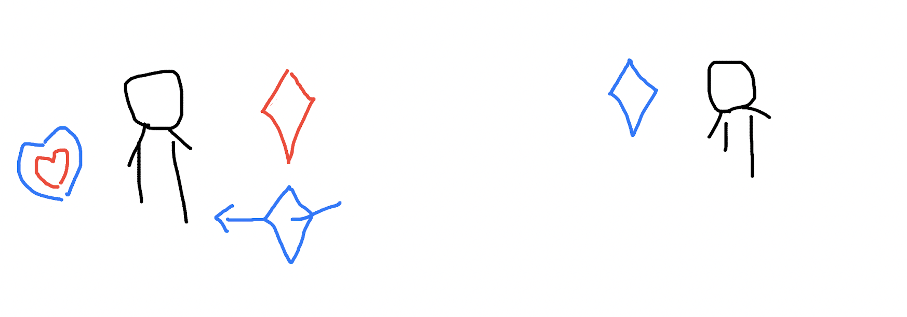Of course, you have no reason to ask others to have the same red magic mirror as you. This is too difficult, not to mention whether others are willing or not, they may not have enough strength to handle your red magic mirror.
If you want to communicate with the other party, just take out your blue magic mirror.
In summary, make yourself stronger.